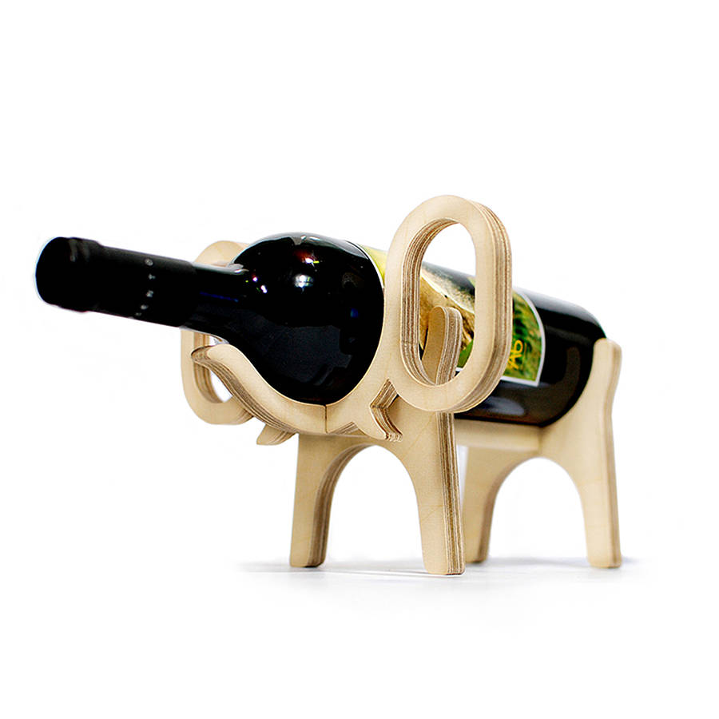
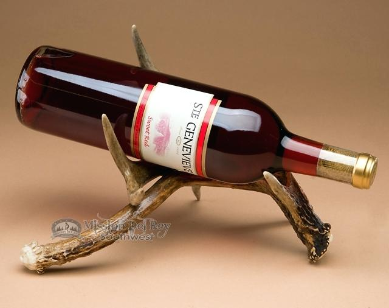
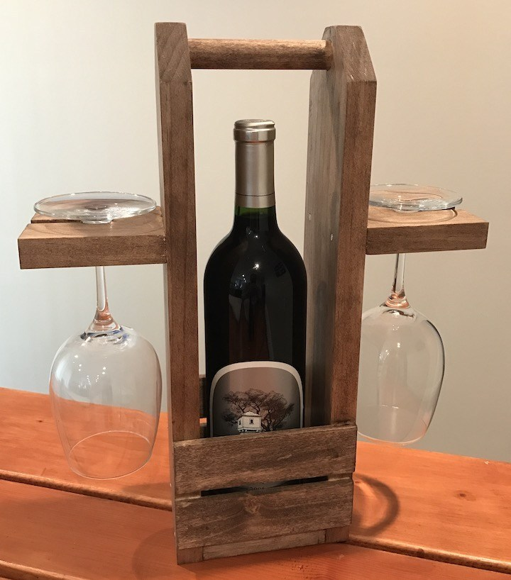
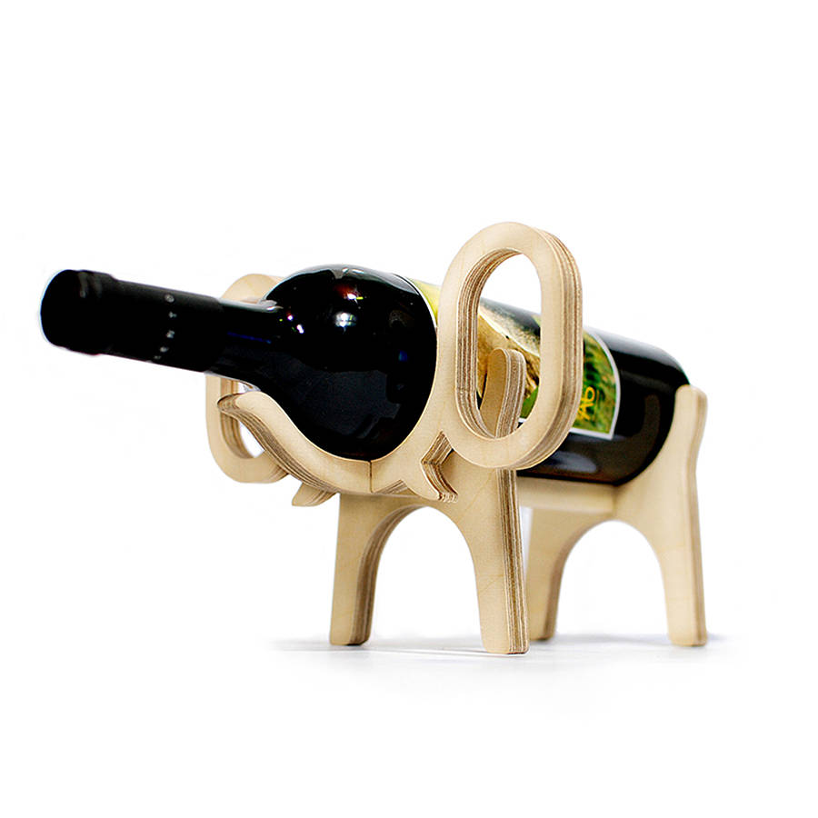
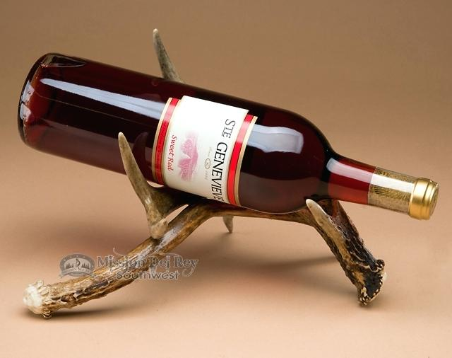
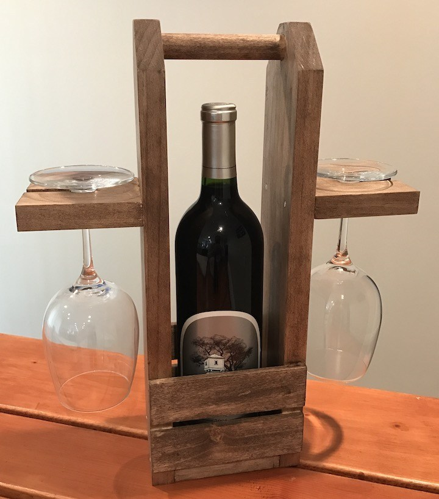

A8: Final Project
For the final project I am created a wine rack with attached wine glass holder. While looking for inspiration I found a cute wooden wine rack shaped like an elephant on pinterest. To incorporate all the techniques used in class I am adding glass holders to the rack.
Inspiration:
 




